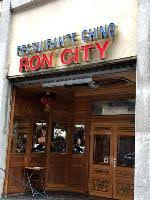
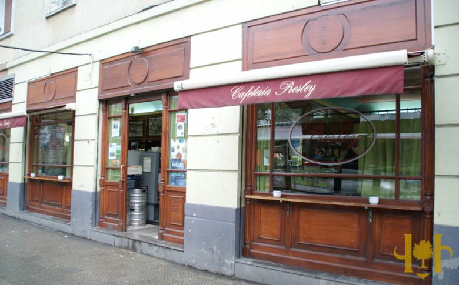

Escoge el establecimiento en el que quieras realizar tu pedido
Situado en la calle Calle Pintores Arrúe, 10. Este es un restaurante chino
Situado en la calle Lehendakari Agirre, 179. Este lugar se enorgullece de servir las mejores rabas de San Ignacio junto a otros muchos pintxos variados que pueden hacer las veces de desayuno o hamaiketako
Cafetería de pintxos en la calle Cataluña 1